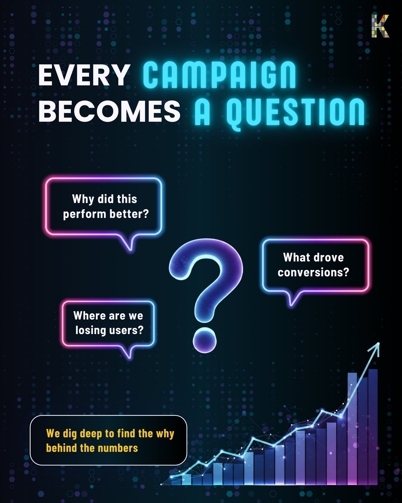
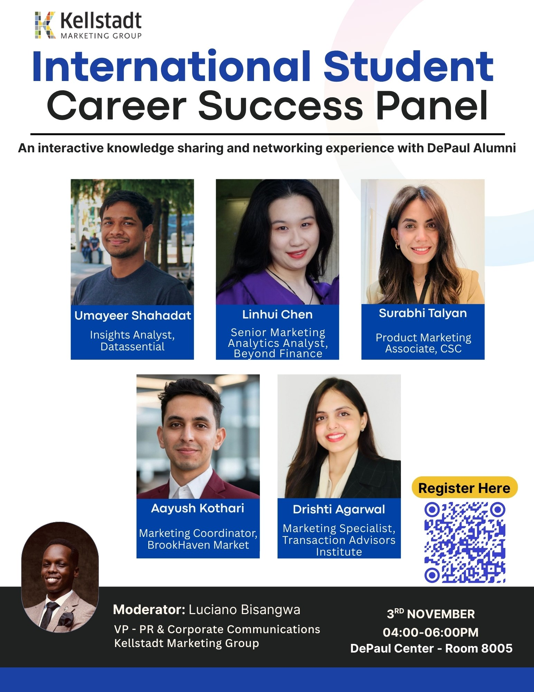

Kellstadt Marketing Group
Role: Led social strategy on an 11-person committee: content plans and calendars for Instagram and LinkedIn, design and copy for event creative, newsletters, and promotion and sponsorship for The Marketer's Nexus.
How do you turn content performance into audience growth?
KMG is DePaul's 25-year-old student marketing organization. It runs recurring events and a steady stream of social content, all competing for the same students' attention. The job wasn't only to produce that content, it was to know which of it was actually working, and to redirect effort toward what performed.
Instagram and LinkedIn follower, reach and impression data, post-level views across formats and posting times, and promotion results for The Marketer's Nexus (registrations against an 80-seat capacity).
Tracked which formats and posting times performed best on Instagram and LinkedIn, then moved the schedule and content mix toward what the data showed. The same read-and-adjust approach ran through the 3.5-month promotion of The Marketer's Nexus.
Posting time mattered more than posting more often.
Reach by posting time showed morning posts consistently reaching more people, so posting moved to mornings on alternate days, which lifted impressions 15%. Reels were the other standout: the top reel reached 14.9K views, about 10x a typical post.
Kept the morning, alternate-day schedule, used reels for the biggest announcements, and built content calendars the next KMG team now uses.
Instagram following grew 12% in nine months and impressions rose 15%. For The Marketer's Nexus, I designed and wrote copy for 42+ assets promoting 3 panels and 20 speakers, filled 65 of 80 seats (81%), secured 5 sponsors (2 cash, 3 in-kind), and raised $800 for speaker gifts through a crowdfunding video, deck and flyers.
The Marketer's Nexus was the flagship event this content strategy built toward. Here's the produced work behind it: the symposium's motion promo, the content-pillar social asset, and the real event flyer for the International Student Career Success Panel it ran alongside.


This role taught me that consistency and measurement matter more than any single viral post. The next thing I'd want to test is whether the morning-posting pattern holds for LinkedIn and Instagram audiences separately, rather than treating both platforms the same way.